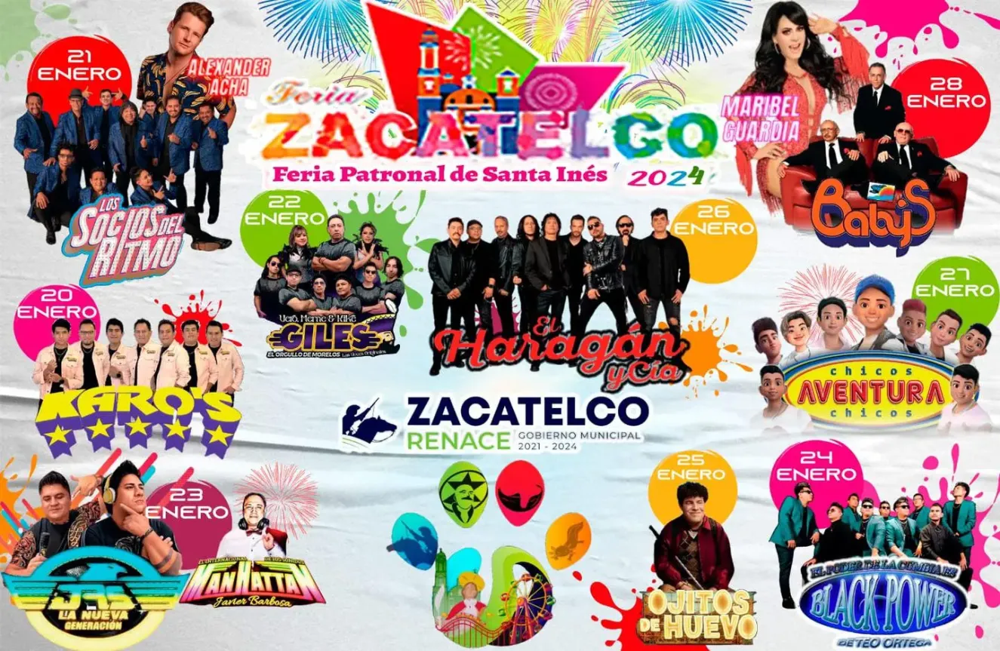

Zacatelco (sakaˈtelkoⓘ) (del náhuatl: Zacatlātelco ‘lugar de zacate’) es una ciudad mexicana, cabecera del municipio homónimo,
ubicada al sur del estado de Tlaxcala. Es la quinta ciudad más poblada del estado con una población de 45 587 habitantes,
2 de a cuerdo con el censo de población y vivienda de 2020 realizado por el Instituto Nacional de Estadística y Geografía (INEGI).
Se ubica en el corredor turístico «Cacaxtla-Xochitécatl»8 así como en el corredor industrial «Puebla-Tlaxcala» siendo este el cuarto corredor
poblacional más importante del país.9 Es además sede del III distrito electoral federal desde 1997,10 y cabecera de la Región Sur desde 2007,11
la cual abarca 18 municipios con una población conjunta de 326 976 habitantes en 2015.12
La Leyenda del Tecajete es otra fábula fascinante proveniente de estas tierras.
Se dice que en la ribera del río que cruza el pueblo, una mujer soltera se ahogó con sus hijos mientras intentaba escapar
de sus perseguidores. Desde entonces, se escuchan rumores de que su espíritu vaga por el río, llorando y buscando a sus hijos.
Festividades DestacadasLa Coronación de la Reina de la FeriaSiguiendo la costumbre de muchas ferias mexicanas, la Feria Zacatelco 2024 organizará la elección y coronación de la reina de la feria. |